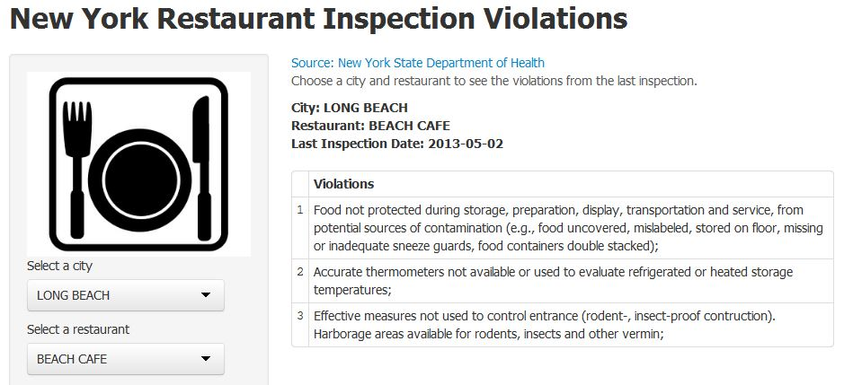

New York Restaurant Inspections
Know the food safety risks of a restaurant.
Check the latest inspection results!
How?
It's simple!
Visit New York Restaurant Inspections.
Select a city.
Select a restaurant.
See the latest inspection results.
Picture It

The Numbers
1,047 Cities.
11,807 Restaurants.
32,745 Violations.
The Data
Source: New York Open Data
Data Provided By: New York State Department of Health
Update Frequency: Monthly